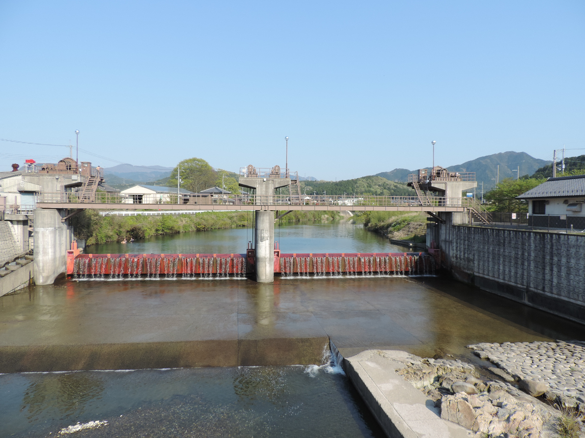

滋賀県 甲良町
田んぼの水を、暮らしにも。
地下の用水が、町の水辺になる。
車窓に続く水田。その水を届ける仕組みの先に、人が集まる公園や集落のせせらぎがあります。甲良町では農業用水を整えるとき、水のある暮らしをどう残すかも考えました。
この町の話を読む ↓約3〜4分で読む / 米原〜京都

写真・図版：運動会プロテインパワー / CC BY-SA 4.0 · 表示枠でトリミング
米どころの、見えない仕事
川があっても、水は足りない。
湖東の田んぼを見ていると、水が豊かな土地なのだと思いたくなります。けれど川が近いことと、必要な時に必要な場所へ水が届くことは、別の話です。
犬上川の扇状地にある甲良では、干ばつのたびに水をめぐる争いが起きました。用水は稲作だけでなく、飲み水や米とぎなど暮らしにも利用されてきました。田と集落は、同じ水の流れを通してつながっていたのです。
水田に立つ稲だけを見ると、その前にある取水、分配、水路の手入れは見えません。甲良の景色は、水を運ぶ仕事まで含めて眺めると、奥行きが変わります。

写真・図版：運動会プロテインパワー / CC BY-SA 4.0 · 表示枠でトリミング
農業を変える整備
水を隠すと、何が消えるか。
1980年代、田の区画や用水を整える計画が示されました。地下のパイプラインで用水を送ることは、農業を支える整備です。一方、道路や水路が変われば、家々のそばを流れていた水の風景も変わります。
地域から上がったのは、慣れ親しんだ農村の景観や生活環境が失われるのではないかという懸念でした。必要なのは農業の便利さか、水辺のある暮らしか。その二択だけで決めず、両方を結ぶ工夫が進められます。
農業用水と、集落の水辺
水を分ける施設を、眺め、集まる場所にも
地下を流れる水を、分水工で地上へ ↑
水を分ける場所が、公園になる
滝にも、農業の仕事がある。
町内では、地下の水を地上へ出す分水工を親水公園に取り入れ、集落内の水路も整えました。石積みや植栽を加えるだけでなく、住民・行政・専門家が議論する過程も、町づくりの一部になりました。
具体例が法養寺地区の「神明の滝」です。農業農村工学会の解説では、6号分水工を親水施設として整える際、限られた用地や高低差の条件の中で滝を設けた経緯が紹介されています。山から自然に落ちる滝とは、成り立ちが違います。
町の公式「甲良の写真展」には、神明の滝や集落の親水性水路の写真があります。この記事の犬上川の写真と見比べると、川そのもの、水を取り入れる施設、人が接する集落の水辺という違いをたどれます。
水のある風景を、食卓へ
田んぼの先に、暮らしがある。
町の水路は、自然に残った美しい風景としてだけ見るものではありません。農業用水を整えながら、人のそばにも水辺をつくろうとした選択が重なっています。現在の流れ方や管理の様子は、場所や時期によって異なります。
この土地の農業に触れるなら、道の駅「せせらぎの里こうら」も入口になります。甲良産の野菜や米など、田畑の営みが食べものになって並ぶ場所です。水路の話を読んだあとなら、米袋に書かれた町の名にも、少し違う風景が重なるはずです。
この話の出典・写真について
- 国土交通省「甲良」 — 水利用と集落、親水公園。
- 全国町村会・2005年町長寄稿 — 1981年・1983年の計画と住民参画。
- 全国町村会・2020年町長寄稿 — 分水工と親水性水路の整備。
- 農業農村工学会「豊かな水—滋賀県甲良地区親水施設—」 — 神明の滝（6号分水工）の整備条件。
- 甲良町「甲良の写真展」 — 集落名・親水性水路・法養寺の写真案内。
- 国土交通省「せせらぎの里こうら」 — 道の駅と地域の農産物。
- 運動会プロテインパワー / CC BY-SA 4.0 · 表示枠でトリミング。画像はWikimedia Commonsから取得。元画像を改変せず、表示枠でトリミング。
- 運動会プロテインパワー / CC BY-SA 4.0 · 表示枠でトリミング。画像はWikimedia Commonsから取得。元画像を改変せず、表示枠でトリミング。
2026年10月24日確認。公開資料に基づく構成。現地取材・撮影は行っていません。